Эксплуатация сервиса
Зависимости
Обновляйте устаревшие
npm outdated
$ npm outdated
Package Current Wanted Latest Location
mocha 2.3.3 2.3.3 2.4.5 mocha
nodemon 1.8.0 1.8.0 1.9.1 nodemon
lodash 3.10.1 3.10.1 4.6.1 lodash
supertest 1.1.0 1.1.0 1.2.0 supertest
$ npm update
Находите уязвимости

nsp check
$ npm install --global nsp$ nsp check --output summary
(+) 1 vulnerabilities found
Name Installed Patched
negotiator 0.5.3 >= 0.6.1
Path
... > express@3.21.2 > ... > negotiator@0.5.3
More Info
https://nodesecurity.io/advisories/106
(+) No known vulnerabilities found1 vulnerabilities found
Фиксируйте версии
package-lock.json
$ npm install # Создаст package-lock.json$ npm install # Использует package-lock.json
"dependencies": {
"pify": {
"version": "2.3.0",
"resolved": "https://registry.npmjs.org/pify/-/pify-2.3.0.tgz",
"integrity": "sha1-7RQaasBDqEnqWISY59yosVMw6Qw=",
"dev": true
},
...

В среднем в 1.5 раза быстрее
Lock-файл не зависит от OS
Ручное разрешение зависимостей
package.json
"name": "project",
"version": "1.0.0",
"dependencies": {
"express": "2.4.0"
},
"resolutions": {
"express/left-pad": "1.1.1"
}
Codestyle
|
vs | |
Использование let и const
const pi = 3.141592653589;
const e = 2.71828182;
const φ = 1.618033988;
for(let i = 0; i < 10; i++) {
console.log(i);
}
Вложенность блоков
if (user.isAuthorized) {
if (notes.length > 0) {
for(let i = 0; i < note.length; i++) {
console.log(notes[i]);
}
} else {
console.log('Notes not found!')
}
}
Цикломатическая сложность
function renderNotes(res, user, notes) {
if (!user.isAuthorized) {
res.sendStatus(403);
} else if (notes) {
res.render('notes', notes);
} else {
res.sendStatus(404);
}
}M = B + 1
Беcполезное code review
exports.list = function (req, res) { // Используй стрелочные
let notes = Note.findAll(); // Используй const
let data = { // И здесь
notes: notes,
meta: req['meta'] // Здесь можно так: req.meta
};
res.render('notes', data);
};
Codestyle помогает
Упростить чтение кода всей команды
Избежать конфликтов
Сделать ревью кода полезнее
Избежать типичных ошибок в коде
Сделать код качественнее
Codestyle.md
# Variable declaration
* Each variable should be declared:
* using a var statement;
* only once in the current scope;
* on a new line;
* as close as possible to the place
where it's first used.
* Each var statement should have only
one variable declared in it..editorconfig

.editorconfig
[*]
indent_size = 4
indent_style = space
[*.json]
indent_size = 2
ESLint
$ npm install --save-dev eslint.eslintrc.json
{
"rules": {
"no-unused-vars": 2,
"max-len": [1, 100],
"max-params": [2, 3]
}
}
Готовые наборы правил
$ npm install --save-dev eslint-config-xo
{
"extends": "xo",
"rules": {
"max-len": [2, 100],
"max-params": [2, 3]
}
}
.eslintignore
build/
**/*.min.js
node_modules
Игнорирование правил в коде
function onError(err, req, res, next) {
/* eslint no-unused-vars: 0 */
/* eslint max-params: [2, 4] */
res.sendStatus(500);
}
Проверка кода
$ node_modules/.bin/eslint .
/Workspace/urfu-2017/notes-app-example/index.js
3:29 error Missing semicolon semi
20:34 error Missing semicolon semi
Автоматическое исправление
$ node_modules/.bin/eslint . --fixESLint ♥︎ VSCode
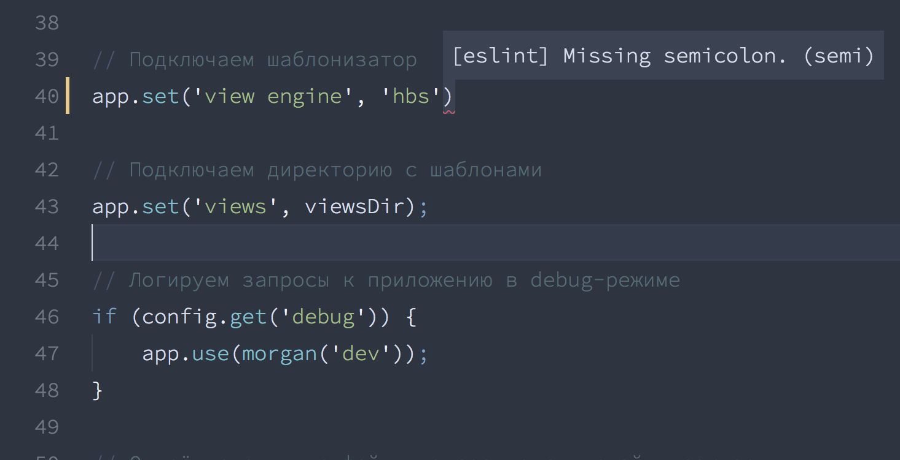
Stylelint
$ npm install --save-dev stylelint.stylelintrc.json
{
"extends": "stylelint-config-standard",
"rules": {
"color-hex-case": "lower"
},
"ignoreFiles": [
"build/*"
]
}
Скрипты
Запуск комплексных команд в виде простых запоминающихся алиасов к ним
Makefile
start:
node index.js
lint:
node_modules/.bin/stylelint public/*.css
node_modules/.bin/eslint *.js
test:
node_modules/.bin/mocha test/$ make testBuilding Web Software With Make
Mark McDonnell
Gulp
const gulp = require('gulp');
const eslint = require('gulp-eslint');
gulp.task('lint', () => {
gulp
.src('*.js')
.pipe(eslint())
});$ gulp lintBuilding With Gulp
Callum Macrae
NPM Scripts
{
"name": "awesome-notes",
"dependencies": {
"mocha": "4.0.0"
},
"scripts": {
"test": "mocha test/",
}
}$ npm run testКоманды
{
"scripts": {
"clean": "rm -rf node_modules/"
}
}Помним о мультиплатформе!
{
"devDependencies": {
"rimraf": "2.5.2"
},
"scripts": {
"clean": "rimraf node_modules/"
}
}
Последовательные команд
{
"scripts": {
"check:lint": "eslint .",
"check:test": "mocha test/",
"check": "npm run check:lint && npm run check:test"
}
}
Последовательные команд
{
"devDependencies": {
"npm-run-all": "1.5.2"
},
"scripts": {
"check:lint": "eslint .",
"check:test": "mocha test/",
"check": "npm-run-all check:lint check:test"
}
}
Параллельные команды
{
"scripts": {
"lint:css": "stylelint **/*.css",
"lint:js": "eslint .",
"lint": "npm run lint:css & npm run lint:js"
}
}
Параллельные команды
{
"scripts": {
"lint:css": "stylelint **/*.css",
"lint:js": "eslint .",
"lint": "npm-run-all --parallel lint:css lint:js"
}
}
Группы команд
{
"scripts": {
"lint:css": "stylelint **/*.css",
"lint:js": "eslint .",
"lint": "npm-run-all --parallel lint:*"
}
}
Настройки
{
"config": {
"report": "nyan"
},
"scripts": {
"test": "mocha test/ -R $npm_package_config_report"
}
}
Внешние скрипты
// scripts/favicon.js
const { readFileSync, writeFileSync } = require('fs');
const toIco = require('to-ico');
const logo = readFileSync('logo.png');
toIco(logo).then(data => writeFileSync('favicon.ico', data));
{
"scripts": {
"favicon": "node scripts/favicon.js"
}
}
Аргументы
{
"scripts": {
"dev": "node app/index.js",
}
}$ npm run dev -- debug$ node app/index.js debugyarn
{
"scripts": {
"dev": "node app/index.js",
}
}$ yarn dev # не указываем run$ yarn dev debug # не указываем --Advanced front-end automation with npm
Kate Hudson
How to Use npm as a Build Tool
Keith Cirkel
Развёртывание сервиса
Share machine

Конфликт за ресурсы
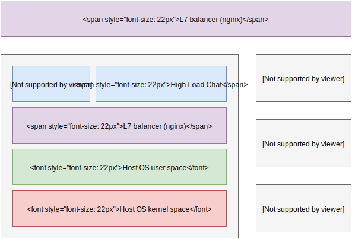
Virtualization
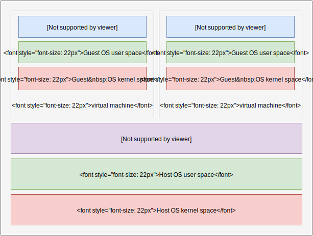
Полная изоляция
Разделение ресурсов (cpu, mem, disk)
Тяжёлые на подъём
Требовательны к дисковому пространству
Virtualization
Containers
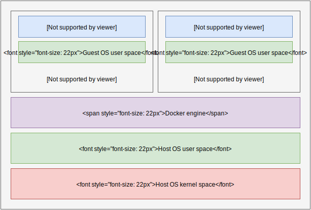
Userland

Лёгкие на подъём
Экономят дисковое пространство
Изоляция уязвима
Привязаны к ядру одной OS

Union File System
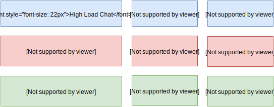
Union File System
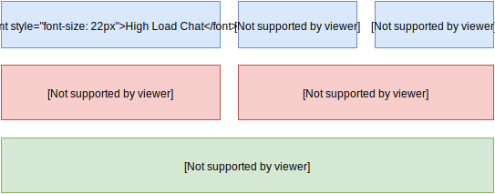
Copy-on-write
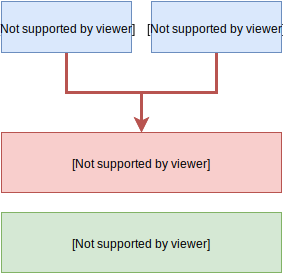
Copy-on-write
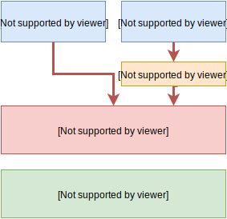
Docker Hub
Ubuntu, Node.js, MySQL, Mongo

Now
$ npm install -g nowПодготавливаем приложение
app/
└── index.js
package.json
app.listen(process.env.PORT);
Dockerfile
app/
└── index.js
package.json
DockerfileFROM node:6 # Базовый слой
COPY app /app
COPY package.json /
RUN npm i --production
ENV PORT 80
EXPOSE 80
CMD node app/index.js
Docker
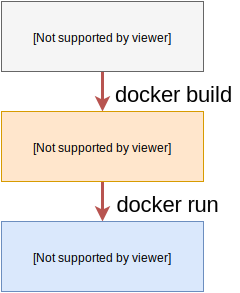
Устанавливаем Docker
Docker
$ docker build .
Sending build context to Docker daemon 157.8MB
Step 1/9 : FROM node:8
Pulling from library/node
Step 2/9 : COPY app /app
---> 7acbc4cf9eb3
...
Successfully built 90f0c5cc4655
Docker
$ docker run -p 8080:80 90f0c5cc4655Развёртывание
$ now install --docker
> Ready! https://notes-app-operating-phtdgicksr.now.sh [3s]
> Upload [====================] 100% 0.0s
> ...
> ▲ docker build
> ...
> Step 6 : EXPOSE 80
> ---> 9459d27e483b
> ---> Running in 5f2b53f95673
> Step 7 : CMD node app/index.js
> ---> b07beb9eb1e2
> ---> Running in cb1f8e626245
> Successfully built 777656ec62fc
> ...
Запущенный контейнер
$ now ls
notes-app-operating (1 of 1 total)
url inst # state
notes-app-operating-phtdgicksr.now.sh 0 READY
Логи
$ now logs notes-app-operating-phtdgicksr.now.sh
02/27 03:01 PM Container started
02/27 03:01 PM Server started on 80
Домен
$ now alias notes-app-operating-phtdgicksr.now.sh \
notes-app-operating-2017
> Success! notes-app-operating-2017.now.sh now points
to notes-app-operating-phtdgicksr.now.sh! [3s]
A Beginner-Friendly Introduction to Containers, VMs and Docker
Preethi Kasireddy
Architecting Containers
Scott McCarty
Размещение статики
Изображения, иконки, таблицы стилей
Не требуют вычислительный ресурсов
Основная задача для статики – разместить ближе к пользователю
Content Delivery Network


Content Delivery Network
Unicast
One Machine, One IP
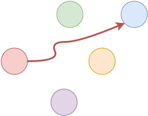
Anycast
Many Machines, One IP
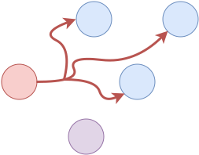
Border Gateway Protocol
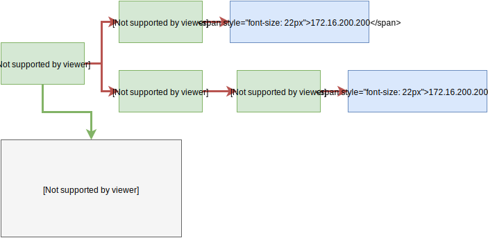
Кеширование
Сжатие текстовой статики
Обеспечение 100% доступности
Количество точек присутствия
Point of Presence
Политика кеширования
Политика устаревания

app/
└── index.js
└── routes.js
└── models
└── controllers
└── views
└── public
└── styles.css
└── favicon.ico
Surge
$ npm install surge$ surge -p ./public -d notes-app-operating.surge.sh
email: email@example.com
token: *****************
project path: ./app/public
size: 3 files, 19.2 KB
domain: notes-app-operating.surge.sh
upload: [====================] 100%, eta: 0.0s
propagate on CDN: [====================] 100%
plan: Free
users: email@example.com
Surge
<head>
<link rel="stylesheet"
href="/styles.css">
<link rel="stylesheet"
href="https://notes-app-operating.surge.sh/styles.css">
</head>
Как работает кеширование
HTTP/1.1 200 OK
Cache-Control: public, max-age=31536000, no-cache
Content-Type: text/css; charset=UTF-8
ETag: d1d3c5c4cdb2568785ba1a366b7fb048
Server:SurgeCDN/0.12.2
body {
font-family: Arial, sans-serif;
}
Как работает кеширование
GET /styles.css HTTP/1.1
Host: notes-app-operating.surge.sh
If-None-Match: d1d3c5c4cdb2568785ba1a366b7fb048
Если ETag равен If-None-Match,
то ответ от Surge будет очень коротким
HTTP/1.1 304 Not Modified
Знакомство с Content Delivery Network
Webzilla
What is Anycast and How it works
Sarath Pillai
Content Delivery Networks
Rajkumar Buyya
Continuous Integration
Автоматизиция проверки кода и развёртывания сервиса по факту изменения кода
Автоматизация рутины
Неизбежное тестирование кода
Быстрая доставка до конечного пользователя

Устанавливаем клиент Travis CLI
$ travis login$ travis init node_js
.travis.yml file created!
urfu-2017/notes-app-operating: enabled :)
.travis.yml
language: node_js
node_js:
- '8'
install:
- npm install
before_script:
- npm run lint
script: